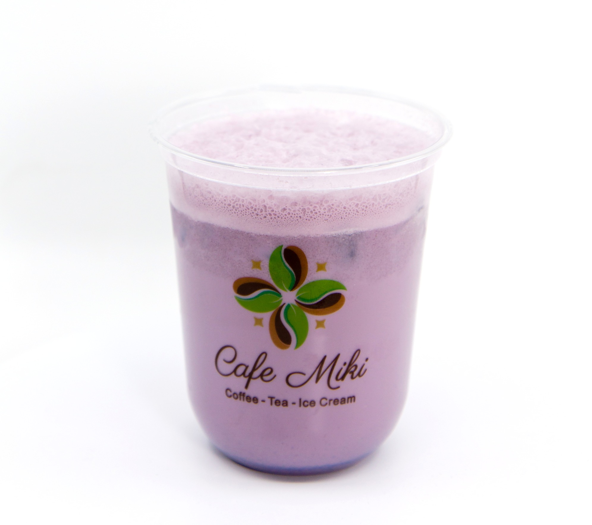
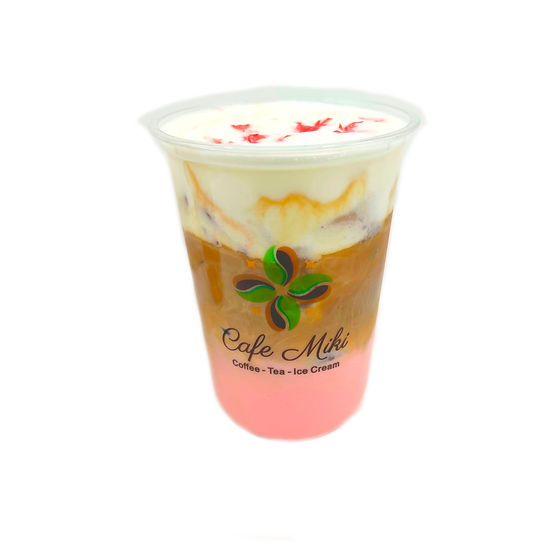
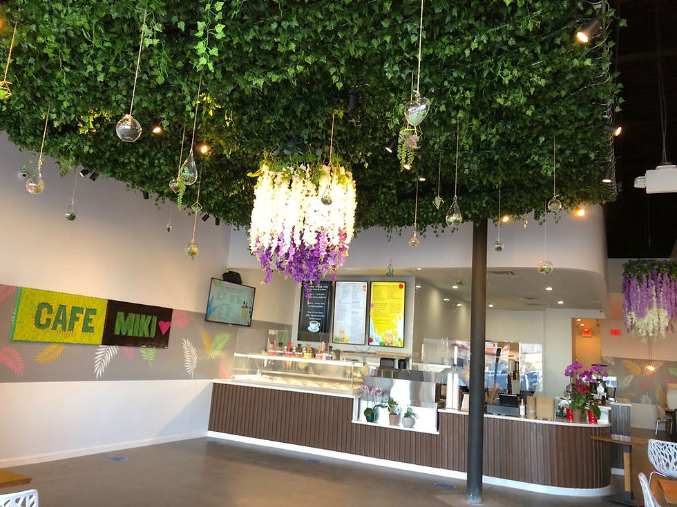

Woodbridge, Virginia
A little joy, by the cup.
Milk teas, lattes, and cafe favorites at Cafe Miki in Woodbridge.


14569 Potomac Mills RoadCoffee · Tea · Ice cream

Make it a stop
Your little pause in the day.
Find Cafe Miki on Potomac Mills Road in Woodbridge.
14569 Potomac Mills RoadWoodbridge, VA 22192